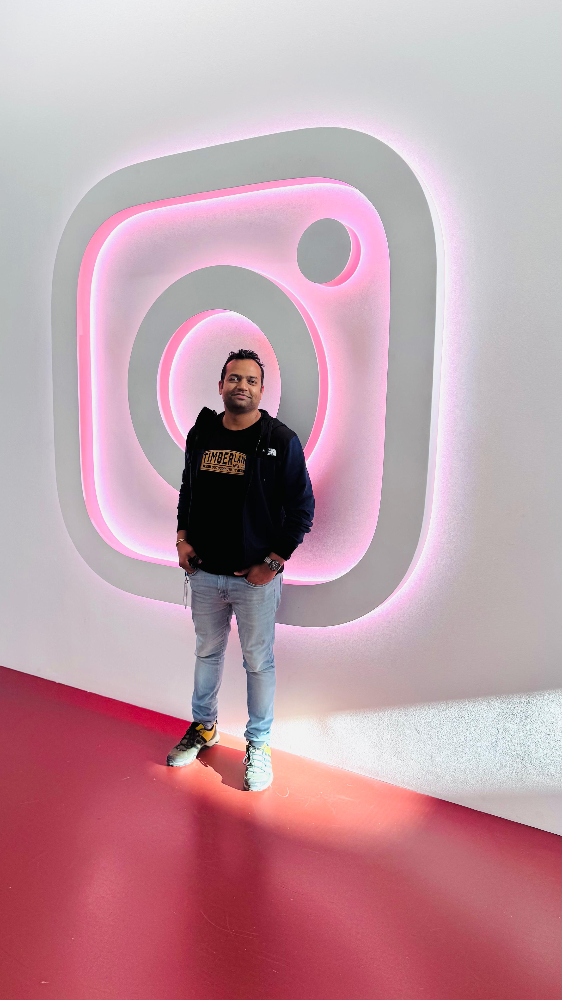
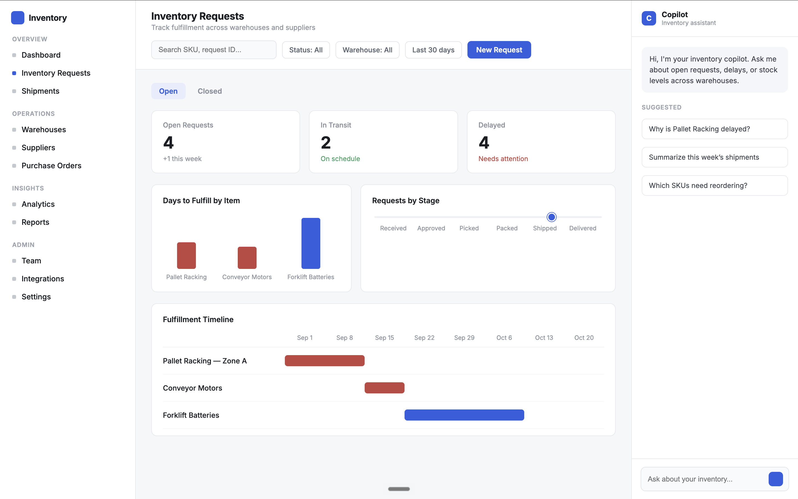
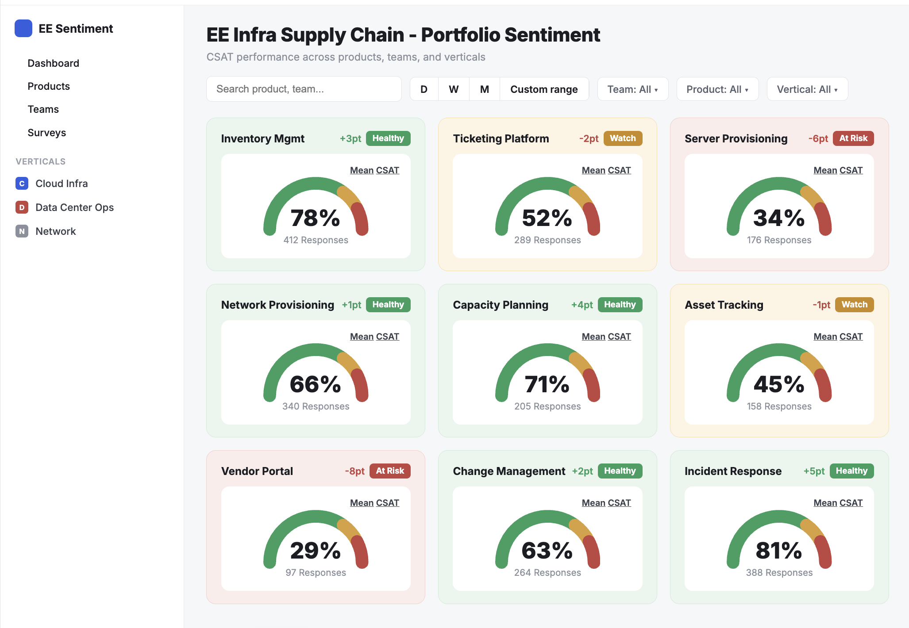
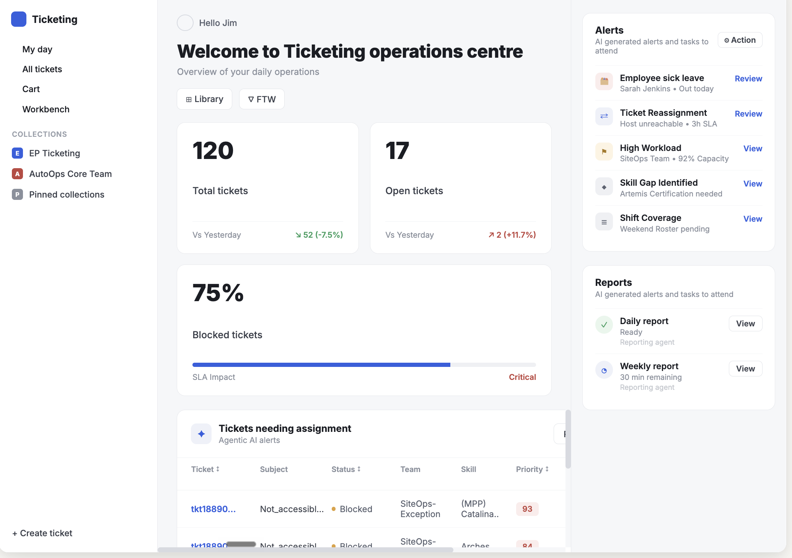
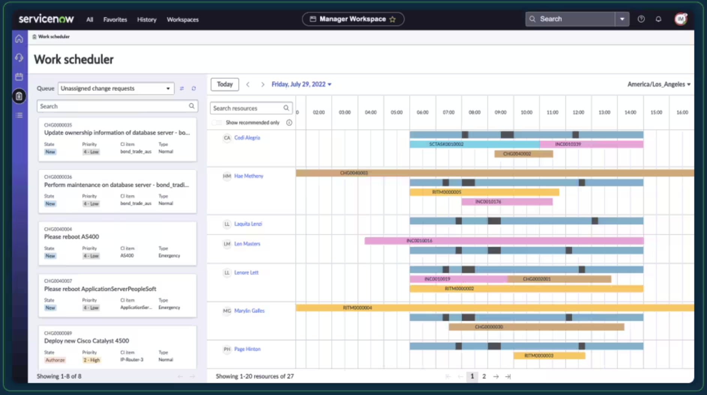
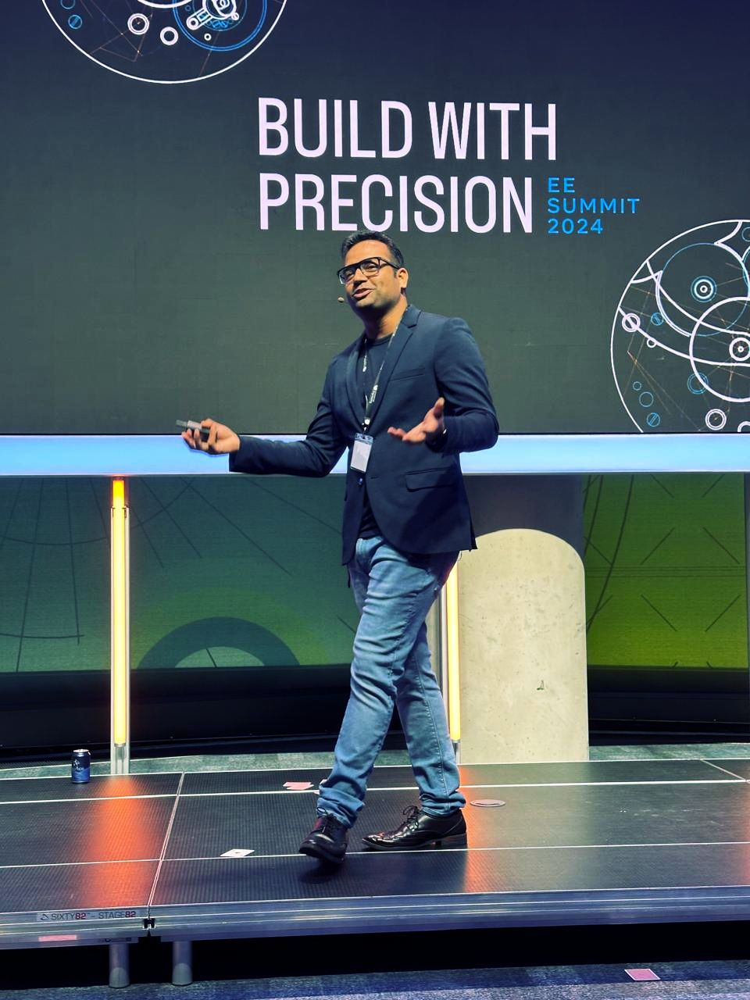

Staff UX Researcher (IC6) at Meta, embedded in Enterprise Products. I run mixed-methods research across supply chain, infrastructure, and logistics, and I build the tooling — dashboards, pipelines, code — that makes the research scale, not just the write-up.

My work sits at the intersection of what operators actually need and what AI can actually deliver. I find the leverage points, validate them with the people doing the work, and don't hand the insight off at the readout — I stay through concept validation, model evaluation, and production.
That full loop — discovery to shipped product — is where the $35M+ in documented business impact came from. It's also why I don't just run studies: I've personally shipped 35+ production code changes (87,000+ lines) live in enterprise applications, with zero engineering dependency, because waiting for eng bandwidth was slower than building the measurement myself.
Outside Meta, I founded UXness, a UX community that's grown to 45,000+ practitioners, and I've published 8 peer-reviewed papers at HCII and related conferences since 2016.
I started in UX at TCS in Mumbai and Pune, spending four years in Banking & Finance research for the likes of RBC, Barclays, HSBC, and the World Bank. At KPIT I became the first professional UXR embedded in the org — building a research culture from zero, against leadership resistance, running ethnographic fieldwork across Detroit, Germany, Malaysia, and India.
At ServiceNow (2020–2022), as the first UXR for their India development center, I owned the Workforce Optimization suite and drove a 25% UX quality improvement across two major releases. I've been at Meta since May 2022, now as Staff UXR (IC6) in London, the sole researcher across a 52-product, 8-team Supply Chain org.
14+ years in. Still mostly interested in the same question: where is the gap between what a system assumes and what a person actually needs — and can I close it myself instead of waiting for someone else to.
Three projects that moved from field research to shipped product.

A cluster of users kept switching between two tools to complete one manual workflow. We needed to quantify what that was actually costing and find where AI could realistically remove the friction.
Explanatory sequential mixed methods: quant behavior analysis, contextual interviews, job shadowing, a co-creation workshop, and AI evals against a golden dataset built with expert users.

No continuous way to measure product sentiment across 50+ products — only one product had in-app CSAT. Everyone else relied on periodic studies that gave snapshots, not trends.
Self-built and shipped an end-to-end CSAT pipeline, scaling from 1 to 20+ apps org-wide — 15+ of them built and integrated solo, with no engineering dependency. Paired quant tracking with qualitative depth, and built the real-time dashboard leadership now uses as its source of truth.

DC technicians relied on manual, fragmented troubleshooting across AI servers — slow diagnosis, inconsistent resolution paths, and a growing backlog of undiagnosed tickets.
Led end-to-end research strategy and vision using exploratory mixed methods — IDIs, job shadowing, field visits, concept testing — plus human-as-judge AI evals to validate model output.

As first UXR for ServiceNow's India IDC, owned the Manager Workspace within WFO — a tool for managers/supervisors driving team scheduling, performance visibility, and skills growth — with no established baseline to track UX quality across releases or against competitors.
Designed and ran the release-over-release UXQ baseline program: 60-min remote usability testing with 15 customer support managers (US, Europe, APAC) against the USE framework (Effective, Efficient, Empowering), recruited via a third-party agency to reach this hard-to-access B2B persona.
50+ personas mapped across the Supply Chain org into a single catalog — leadership's source of truth for roadmapping.
5 Years of insights consolidated into one searchable system, plus an org-wide AI skill built on top of it for early signal.
Co-architected a Llama-powered thematic analysis tool processing 10M+ survey responses a year.
"Closing the gap between finding the insight and shipping the fix became the actual methodology."
"Abhishek identified we had no scalable way to measure product sentiment. Rather than wait for engineering bandwidth, he personally built and deployed in-app CSAT surveys across 15+ enterprise applications, writing and shipping the production code himself."
"He's not a conventional UX researcher — he's a product leader who sees beyond the problem at hand and constructs novel methods to drive data-driven decisions. He's become a sought-after collaborator with the influence to drive product pivots and secure engineering investment."
